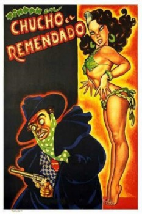

Chucho El Remendado (1952)


País:México, 85 minutos.
Idiomas:Español
GénerosComedia
Director/es:Gilberto Martínez Solares
Guionistas:
Códec de vídeo:Unknown
Número: 228
TomatoMeter:

--

--
Clasificación IMDb:


7.4/10 (6 votos)
Certificación:
Argumento:
"Gentleman bandit" acts out ridiculous schemes to steal valuables from his society friends.
Reparto
Germán Valdés, Alicia Caro, Perla Aguiar, Marcelo Chávez
Medio: Archivo de video,
Localización: D:\PELICULAS\ACTORES\Tin Tan\Chucho El Remendado (1952)\Chucho El Remendado (1952).mpg
Prestado: No
Rel. aspecto: Unknown